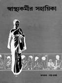

Contents
A list of what is discussed in each chapter
INTRODUCTION
NOTE ABOUT THIS NEW EDITION
WORDS TO THE VILLAGE HEALTH WORKER (Brown Pages)..............w1
Health Needs and Human Needs w2
A Balance Between Prevention and
Many Thing Relate to Health Care w7
Treatment w17
Take a Good Look at Your Community w8
Sensible and Limited Use of Medicines w18
Using Local Resources to Meet Needs w12
Finding Out What Progress Has Been
Deciding What to Do and Where to
Made w20
Begin w13
Teaching and Learning Together w21
Trying a New Idea w15
Tools for Teaching w22
A Balance Between People and Land w16
Making the Best Use of This Book w28
Chapter 1
HOME CURES AND POPULAR BELIEFS....................................... 1
Home Cures That Help 1
Ways to Tell Whether a Home Remedy
Beliefs That Can Make People Well 2
Works or Not 10
Beliefs That Can Make People Sick 4
Medicinal Plants 12
Witchcraft—Black Magic—and the Evil Eye 5
Homemade Casts—for Broken Bones 14
Questions and Answers 6
Enemas, Laxatives, and Purges 15
Sunken Fontanel or Soft Spot 9
Chapter 2
SICKNESSES THAT ARE OFTEN CONFUSED................................. 17
What Causes Sickness? 17
Example of Local Names for Sicknesses 22
Different Kinds of Sicknesses and
Misunderstanding Due to Confusion
Their Causes 18 of Names 25
Non-infectious Diseases 18
Confusion between Different Illnesses
Infectious Diseases 19
That Cause Fever 26
Sicknesses That Are Hard to Tell Apart 20
Chapter 3
HOW TO EXAMINE A SICK PERSON......................................... 29
Questions 29 Eyes
General Condition of Health 30 Ears
Temperature 30 Skin
How to Use a Thermometer 31
The Belly (Abdomen) 35
Breathing (Respiration) 32
Muscles and Nerves 37
Pulse (Heartbeat) 32
Chapter 4
HOW TO TAKE CARE OF A SICK PERSON.................................... 39
The Comfort of the Sick Person 39
Watching for Changes 41
Special Care for a Person Who Is Very Ill 40
Signs of Dangerous Illness 42
Liquids 40
When and How to Look for Medical Help 43
Food 41
What to Tell the Health Worker 43
Cleanliness and Changing Position in Bed 41
Patient report 44
Chapter 5
HEALING WITHOUT MEDICINES............................................. 45
Healing with Water 46
When Water Is Better than Medicines 47
Chapter 6
RIGHT AND WRONG USE OF MODERN MEDICINES............................ 49
Guidelines for the Use of Medicine 49
When Should Medicine Not Be Taken? 54
The Most Dangerous Misuse of Medicine 50
Chapter 7
ANTIBIOTICS: WHAT THEY ARE AND HOW TO USE THEM...................... 55
Guidelines for the Use of Antibiotics 56
What to Do if an Antibiotic Does Not Seem to Help 57
Importance of Limited Use of Antibiotics 58
Chapter 8
HOW TO MEASURE AND GIVE MEDICINE.................................... 59
Medicine in Liquid Form 61
Dosage Instructions for Persons Who
How to Give Medicines to Small Children 62
Cannot Read 63
How to Take Medicines 63
Chapter 9
INSTRUCTIONS AND PRECAUTIONS FOR INJECTIONS........................ 65
When to Inject and When Not To 65
Avoiding Serious Reactions to Penicillin 71
Emergencies When It Is Important to Give
How to Prepare a Syringe for Injection 72
Injections
How to Inject 73
Medicines Not to Inject 67
How Injections Can Disable Children 74
Risks and Precautions 68
How to Sterilize Equipment 74
Dangerous Reactions From Injecting Certain
Medicines

Chapter 10
FIRST AID................................................................. 75
Basic Cleanliness and Protection 75
Infected Wounds 88
Fever 75
Bullet, Knife, and Other Serious Wounds 90
Shock 77
Emergency Problems of the Gut
Loss of Consciousness 78
(Acute Abdomen) 93
When Something Gets Stuck in the
Appendicitis, Peritonitis 94
Throat
Burns 96
Drowning 79
Broken Bones (Fractures) 98
When Breathing Stops: Mouth-to-Mouth
How to Move a Badly Injured Person 100
Breathing 80
Dislocations
Emergencies Caused by Heat 81
(Bones Out of Place at a Joint) 101
How to Control Bleeding from a Wound 82
Strains and Sprains 102
How to Stop Nosebleeds 83 Poisoning
Cuts, Scrapes, and Small Wounds 84
Snakebite 104
Large Cuts: How to Close Them 85
Other Poisonous Bites and Stings 106
Bandages 87
Chapter 11
NUTRITION: WHAT TO EAT TO BE HEALTHY................................. 107
Sicknesses Caused by Not Eating Well 107
Special Diets for Specific Health
Why It Is Important to Eat Right 109
Problems
Preventing Malnutrition 109 Anemia
Main Foods and Helper Foods 110 Rickets
Eating Right to Stay Healthy 111
High Blood Pressure 125
How to Recognize Malnutrition 112
Fat People 126
Eating Better When You Do Not Have Much
Constipation 126
Money or Land 115 Diabetes
Where to Get Vitamins: In Pills or
Acid Indigestion, Heartburn, and Stomach in Foods? 118
Ulcers
Things to Avoid in Our Diet 119 Goiter
The Best Diet for Small Children 120
(A Swelling or Lump on the Throat) 130
Harmful Ideas about Diet 123
Chapter 12
PREVENTION: HOW TO AVOID MANY SICKNESSES.......................... 131
Cleanliness—and Problems from Lack
Trichinosis 144 of Cleanliness 131 Amebas
Basic Guidelines of Cleanliness 133 Giardia
Sanitation and Latrines 137
Blood Flukes
Worms and Other Intestinal Parasites 140
(Schistosomiasis, Bilharzia) 146
Roundworm (Ascaris) 140
Vaccinations (lmmunizations)—Simple,
Pinworm (Threadworm, Enterobius) 141
Sure Protection 147
Whipworm (Trichuris) 142
Other Ways to Prevent Sickness and Injury 148
Hookworm 142
Habits That Affect Health 148
Tapeworm 143
Chapter 13
SOME VERY COMMON SICKNESSES....................................... 151
Dehydration 151 Bronchitis
Diarrhea and Dysentery 153 Pneumonia
The Care of a Person with Acute Diarrhea 160 Hepatitis
Vomiting 161
Arthritis (Painful, Inflamed Joints) 173
Headaches and Migraines 162
Back Pain 173
Colds and the Flu 163
Varicose Veins 175
Stuffy and Runny Noses 164
Piles (Hemorrhoids) 175
Sinus Trouble (Sinusitis) 165
Swelling of the Feet and Other Parts
Hay Fever (Allergic Rhinitis) 165 of the Body 176
Allergic Reactions 166
Hernia (Rupture) 177
Asthma 167
Seizures (Fits, Convulsions) 178
Cough 168
Chapter 14
SERIOUS ILLNESSES THAT NEED SPECIAL MEDICAL ATTENTION............179
Tuberculosis (TB, Consumption) 179
Dengue (Breakbone Fever,
Rabies 181
Dandy Fever) 187
Tetanus (Lockjaw) 182
Brucellosis (Undulant Fever, Malta Fever) 188
Meningitis 185
Typhoid Fever 188
Malaria 186 Typhus
Leprosy (Hansen’s Disease) 191
Chapter 15
SKIN PROBLEMS.........................................................193
General Rules for Treating Skin Problems 193
Warts (Verrucae) 210
Instructions for Using Hot Compresses 195 Corns
Identifying Skin Problems 196
Pimples and Blackheads (Acne) 211
Scabies 199
Cancer of the Skin 211
Lice 200
Tuberculosis of the Skin or
Bedbugs 200
Lymph Nodes 212
Ticks and Chiggers 201
Erysipelas and Cellulitis 212
Small Sores with Pus 201
Gangrene (Gas Gangrene) 213
Impetigo 202
Ulcers of the Skin Caused by
Boils and Abscesses 202
Poor Circulation 213
Itching Rash, Welts, or Hives 203
Bed Sores 214
Things That Cause Itching or Burning of the
Skin Problems of Babies 215
Skin
204 Eczema
Shingles (Herpes Zoster) 204
(Red Patches with Little Blisters) 216
Ringworm, Tinea (Fungus Infections) 205 Psoriasis
White Spots on the Face and Body 206
Mask of Pregnancy 207
Pellagra and Other Skin Problems Due to Malnutrition 208
Chapter 16
THE EYES............................................................... 217
Danger Signs 217
Trouble Seeing Clearly 223
Injuries to the Eye 218
Cross-Eyes and Wandering Eyes 223
How to Remove a Speck of Dirt from
Sty (Hordeolum) 224 the Eye 218
Pterygium 224
Chemical Burns of the Eye 219
A Scrape, Ulcer, or Scar on the Cornea 224
Red, Painful Eyes—Different Causes 219
Bleeding in the White of the Eye 225
'Pink Eye’ (Conjunctivitis) 219
Bleeding behind the Cornea (Hyphema) 225
Trachoma 220
Pus behind the Cornea (Hypopyon) 225
Infected Eyes in Newborn Babies
Cataract 225
(Neonatal Conjunctivitis) 221
Night Blindness and Xerophthalmia 226
Iritis (Inflammation of the Iris) 221 Spots or 'Flies’ before the Eyes 227
Glaucoma 222
Double Vision 227
Infection of the Tear Sac
River Blindness (Onchocerciasis) 227
(Dacryocystitis) 223
Chapter 17
THE TEETH, GUMS, AND MOUTH........................................... 229
Care of Teeth and Gums 229
Sores or Cracks at the Corners of the
If You Do Not Have A Toothbrush 230
Mouth 232
Toothaches and Abscesses 231
White Patches or Spots in the Mouth 232
Pyorrhea, a Disease of the Gums 231
Cold Sores and Fever Blisters 232
Chapter 18
THE URINARY SYSTEM AND THE GENITALS................................ 233
Urinary Tract Infections 234
Use of a Catheter to Drain Urine 239
Kidney or Bladder Stones 235
Problems of Women 241
Enlarged Prostate Gland 235
Vaginal Discharge 241
Diseases Spread by Sexual Contact
How a Woman Can Avoid Many
(Sexually Transmitted Infections) 236
Infections 242
Gonorrhea (Clap, VD, the Drip) and
Pain or Discomfort in a Woman’s Belly 243
Chlamydia 236
Men and Women Who Cannot Have Children
Syphilis 237
(Infertility) 244
Bubos: Bursting Lymph Nodes in the Groin 238
Chapter 19
INFORMATION FOR MOTHERS AND MIDWIVES.............................. 245
The Menstrual Period
How to Stay Healthy during Pregnancy 247
(Monthly Bleeding in Women) 245
Minor Problems during Pregnancy 248
The Menopause
Danger Signs in Pregnancy 249
(When Women Stop Having Periods) 246
Check-ups during Pregnancy
Pregnancy 247
(Prenatal Care) 250
Record of Prenatal Care 253
Difficult Births 267
Things to Have Ready before the Birth 254
Tearing of the Birth Opening 269
Preparing for Birth 256
Care of the Newborn Baby 270
Signs That Show Labor Is Near 258
Illnesses of the Newborn 272
The Stages of Labor 259
The Mothers Health after Childbirth 276
Care of the Baby at Birth 262
Childbirth Fever
Care of the Cut Cord (Navel) 263
(Infection after Giving Birth) 276
The Delivery of the Placenta (Afterbirth) 264
Care of the Breasts 277
Hemorrhaging (Heavy Bleeding) 264
Lumps or Growths in the Lower Part
Medicines to Control Bleeding of the Belly 280
After Birth or Miscarriage:
Miscarriage (Spontaneous Abortion) 281
Oxytocin, Ergonovine, Misoprostol 266
High Risk Mothers and Babies 282
Chapter 20
FAMILY PLANNING—
HAVING THE NUMBER OF CHILDREN YOU WANT............................. 283
Choosing a Method of Family Planning 284
Methods for Those Who Never Want to Have
Oral Contraceptives
More Children 293
(Birth Control Pills) 286
Home Methods for Preventing
Other Methods of Family Planning 290
Pregnancy
Combined Methods 292
Chapter 21
HEALTH AND SICKNESSES OF CHILDREN................................... 295
What to Do to Protect Children’s
Whooping Cough 313
Health
295 Diphtheria
Children’s Growth—
Infantile Paralysis (Polio) 314 and the 'Road to Health’ 297
How to Make Simple Crutches 315
Child Health Chart 298
Problems Children Are Born With 316
Review of Children’s Health Problems
Dislocated Hip 316
Discussed in Other Chapters 305
Umbilical Hernia
Health Problems of Children Not
(Belly Button that Sticks Out) 317
Discussed in Other Chapters 309
A 'Swollen Testicle’
Earache and Ear Infections 309
(Hydrocele or Hernia) 317
Sore Throat and Inflamed Tonsils 309
Mentally Slow, Deaf, or Deformed
Rheumatic Fever 310
Children
Infectious Diseases of Childhood 311
The Spastic Child (Cerebral Palsy) 320
Chickenpox 311
Slow Development in the
Measles (Rubeola) 311
First months of Life 321
German Measles (Rubella) 312
Sickle Cell Disease 321
Mumps 312
Helping Children Learn 322
Chapter 22
HEALTH AND SICKNESSES OF OLDER PEOPLE............................ 323
Summary of Health Problems Discussed in
Deafness 327
Other Chapters 323
Loss of Sleep (Insomnia) 328
Other Important Illnesses of Old Age 325
Diseases Found More Often in People
Heart Trouble 325 over Forty 328
Words to Younger Persons Who Want to
Cirrhosis of the Liver 328
Stay Healthy When Older 326
Gallbladder Problems 329
Stroke (Apoplexy, Cerebro-Vascular
Accepting Death 330
Accident, CVA) 327
Chapter 23
THE MEDICINE KIT....................................................... 331
How to Care for Your Medicine Kit 332
The Village Medicine Kit 336
Buying Supplies for the Medicine Kit 333
Words to the Village Storekeeper
The Home Medicine Kit 334
(or Pharmacist) 338
THE GREEN PAGES—The Uses, Dosage, and Precautions for Medicines....... 339
List of Medicines in the Green Pages 341
Index of Medicines in the Green Pages 344
Information on Medicines 350
ADDITIONAL INFORMATION...............................................399
HIV and AIDS 399
Guinea Worm 406
Sores on the Genitals 402
Emergencies Caused by Cold 408
Circumcision and Excision 404
How to Measure Blood Pressure 410
Special Care for Small, Early,
Poisoning from Pesticides 412 and Underweight Babies 405
Complications from Abortion 414
Ear Wax 405
Drug Abuse and Addiction 416
Leishmaniasis 406
VOCABULARY—Explaining Difficult Words............................... 419
ADDRESSES FOR TEACHING MATERIALS................................ 429
INDEX (Yellow Pages)................................................. 433
Dosage Instructions for Persons Who Cannot Read
Patient Reports
Other Books from Hesperian
Information About Vital Signs
Introduction
This handbook has been written primarily for those who live far from medical centers, in places where there is no doctor. But even where there are doctors, people can and should take the lead in their own health care. So this book is for everyone who cares. It has been written in the belief that:
1. Health care is not only everyone’s right, but everyone’s responsibility.
2. Informed self-care should be the main goal of any health program or activity.
3. Ordinary people provided with clear, simple information can prevent and treat most common health problems in their own homes—earlier, cheaper, and often better than can doctors.
4. Medical knowledge should not be the guarded secret of a select few, but should be freely shared by everyone.
5. People with little formal education can be trusted as much as those with a lot. And they are just as smart.
6. Basic health care should not be delivered, but encouraged.
Clearly, a part of informed self-care is knowing one’s own limits. Therefore guidelines are included not only for what to do, but for when to seek help. The book points out those cases when it is important to see or get advice from a health worker or doctor. But because doctors or health workers are not always nearby, the book also suggests what to do in the meantime—even for very serious problems.
This book has been written in fairly basic English, so that persons without much formal education (or whose first language is not English) can understand it. The language used is simple but, I hope, not childish. A few more difficult words have been used where they are appropriate or fit well. Usually they are used in ways that their meanings can be easily guessed. This way, those who read this book have a chance to increase their language skills as well as their medical skills.
Important words the reader may not understand are explained in a word list or vocabulary at the end of the book. The first time a word listed in the vocabulary is mentioned in a chapter it is usually written in italics.
Where There Is No Doctor was first written in Spanish for farm people in the
mountains of Mexico where, years ago, the author helped form a health care network now run by the villagers themselves. Where There Is No Doctor has been translated into more than 80 languages and is used by village health workers in over 100 countries.
The first English edition was the result of many requests to adapt it for use in Africa and Asia. I received help and suggestions from persons with experience in many parts of the world. But the English edition seems to have lost much of the flavor and usefulness of the original Spanish edition, which was written for a specific area, and for people who have for years been my neighbors and friends. In rewriting the book to serve people in many parts of the world, it has in some ways become too general.
To be fully useful, this book should be adapted by persons familiar with the health needs, customs, special ways of healing, and local language of specific areas.
•
Persons or programs who wish to use this book, or portions of it, in preparing their own manuals for villagers or health workers are encouraged to do so. Permission from the author or publisher is not needed—provided the parts reproduced are distributed free or at cost—not for profit. It would be appreciated if you would
(1) include a note of credit and (2) send a copy of your production to Hesperian,
1919 Addison St., #304, Berkeley, California 94704, U.S.A.
For local or regional health programs that do not have the resources for revising this book or preparing their own manuals, it is strongly suggested that if the present edition is used, leaflets or inserts be supplied with the book to provide additional information as needed.
In the Green Pages (the Uses, Dosage, and Precautions for Medicines) blank spaces have been left to write in common brand names and prices of medicines.
Once again, local programs or organizations distributing the book would do well to make up a list of generic or low-cost brand names and prices, to be included with each copy of the book.
•
This book was written for anyone who wants to do something about his or her own and other people’s health. However, it has been widely used as a training and work manual for community health workers. For this reason, an introductory section has been added for the health worker, making clear that the health worker’s first job is to share her knowledge and help educate people.
Today in over-developed as well as under-developed countries, existing health care systems are in a state of crisis. Often, human needs are not being well met. There is too little fairness. Too much is in the hands of too few.
Let us hope that through a more generous sharing of knowledge, and through learning to use what is best in both traditional and modern ways of healing, people everywhere will develop a kinder, more sensible approach to caring—for their own health, and for each other.
—D.W.
Note about this New Edition
In this revised edition of Where There is No Doctor, we have added new information and updated old information, based on the latest scientific knowledge.
Health care specialists from many parts of the world have generously given advice and suggestions.
When it would fit without having to change page numbers, we have added new information to the main part of the book. (This way, the numbering stays the same, so that page references in our other books, such as Helping Health Workers Learn, will still be correct.)
The Additional Information section at the end of the book (p. 399) has information about health problems of growing or special concern: HIV and AIDS, sores on the genitals, leishmaniasis, complications from abortion, guinea worm, and others.
Here also are topics such as measuring blood pressure, misuse of pesticides, drug addiction, and a method of caring for early and underweight babies.
New ideas and information can be found throughout the book—medical knowledge is always changing! For example:
• Nutrition advice has changed. Experts used to tell mothers to give children more foods rich in proteins. But it is now known that what most poorly nourished children need is more energy-rich foods. Many low-cost energy foods, especially grains, provide enough protein if the child eats enough of them. Finding ways to give enough energy foods is now emphasized, instead of the 'four food groups’.
(See Chapter 11.)
• Advice for treatment of stomach ulcer is different nowadays. For years doctors recommended drinking lots of milk. But according to recent studies, it is better to drink lots of water, not milk. (See p. 129.)
• Knowledge about special drinks for diarrhea (oral rehydration therapy) has also changed. Not long ago experts thought that drinks made with sugar were best. But we now know that drinks made with cereals do more to prevent water loss, slow down diarrhea, and combat malnutrition than do sugar-based drinks or
“ORS” packets. (See p. 152.)
• A section has been added on sterilizing equipment. This is important to prevent the spread of certain diseases, such as HIV. (See p. 74.)
• We have also added sections on dengue (p. 187), sickle cell disease (p. 321), and contraceptive implants (p. 293). Page 105 contains revised information about treatment of snakebite.
• See page 139 for details on building the fly-killing VIP latrine.

If you have suggestions for improving this book, please let us know. Your ideas are very important to us!
The Green Pages now include some additional medicines. This is because some diseases have become resistant to the medicines that were used in the past.
So it is now harder to give simple medical advice for certain diseases—especially malaria, tuberculosis, typhoid, and sexually spread infections. Often we give several possibilities for treatment. But for many infectious diseases you will need local advice about which medicines are available and effective in your area.
In updating the information on medicines, we mostly include only those on the
World Health Organization’s List of Essential Drugs. (However we also discuss some widely used but dangerous medicines to give warnings and to discourage their use— see also pages 50 to 52.) In trying to cover health needs and variations in many parts of the world, we have listed more medicines than will be needed for any one area. To persons preparing adaptations of this book, we strongly suggest that the Green Pages be shortened and modified to meet the specific needs and treatment patterns in your country.
In this new edition of Where There Is No Doctor we continue to stress the value of traditional forms of healing, and have added some more “home remedies.” However, since many folk remedies depend on local plants and customs, we have added only a few which use commonly found items such as garlic. We hope those adapting this book will add home remedies useful to their area.
Community action is emphasized throughout this book. For example, today it is often not enough to explain to mothers that 'breast is best’. Communities must organize to make sure that mothers are able to breastfeed their babies at work.
Likewise, problems such as misuse of pesticides (p. 412), drug abuse (p. 416), and unsafe abortions (p. 414) are best solved by people working together to make their communities safer, healthier, and more fair.
“Health for all” can be achieved only through the organized demand by people for greater equality in terms of land, wages, services, and basic rights.
More power to the people!